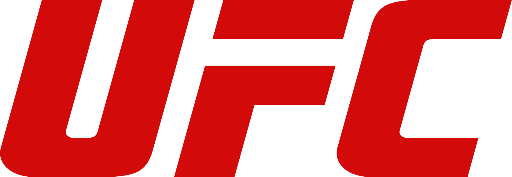

The Ultimate Fighting Championship (UFC) is an American mixed martial arts (MMA) promotion company based in Las Vegas, Nevada. It is owned and operated by Zuffa, a wholly owned subsidiary of Endeavor Group Holdings.[3][4][5] It is the largest MMA promotion company in the world as of 2011.[6] It produces events worldwide that showcase 12 weight divisions (eight men's and four women's) and abides by the Unified Rules of Mixed Martial Arts.[7] As of 2022, it had held over 600 events. Dana White has been its president since 2001. Under White's stewardship, it has grown into a global multi-billion-dollar enterprise.[8] The UFC was founded by businessman Art Davie and Brazilian martial artist Rorion Gracie,[9] and the first event was held in 1993 at the McNichols Sports Arena in Denver, Colorado.[10] The purpose of the early Ultimate Fighting Championship competitions was to identify the most effective martial art in a contest with minimal rules and no weight classes between competitors of different fighting disciplines. In subsequent events, more rigorous rules were created and fighters began adopting effective techniques from more than one discipline, which indirectly helped create a separate style of fighting known as present-day mixed martial arts. In 2016, UFC's parent company, Zuffa, was sold to a group led by Endeavor, then known as William Morris Endeavor (WME–IMG), including Silver Lake Partners, Kohlberg Kravis Roberts and MSD Capital[11] for US$4.025 billion.[12] In 2021, Endeavor bought out Zuffa's other owners at a valuation of $1.7 billion.[5] With a TV deal and expansion in Australia, Asia, Europe,[13][14][15] and new markets within the United States, the UFC has achieved greater mainstream media coverage. It earned US$609 million in 2015,[16] and its next domestic media rights agreement with ESPN was valued at $1.5 billion over a five-year term.[17]
2001 and the beginning of Zuffa era After the long battle to secure sanctioning, SEG stood on the brink of bankruptcy, when Station Casinos executives Frank and Lorenzo Fertitta and their business partner Dana White approached them in 2000, with an offer to purchase the UFC. A month later, in January 2001, the Fertittas bought the UFC for $2 million and created Zuffa, LLC as the parent entity controlling the UFC. "I had my attorneys tell me that I was crazy because I wasn't buying anything. I was paying $2 million and they were saying 'What are you getting?'" Lorenzo Fertitta revealed to Fighters Only magazine,[40] recalling the lack of assets he acquired in the purchase. "And I said 'What you don't understand is I'm getting the most valuable thing that I could possibly have, which is those three letters: UFC. That is what's going to make this thing work. Everybody knows that brand, whether they like it or they don't like it, they react to it.'"[40] With ties to the Nevada State Athletic Commission (Lorenzo Fertitta was a former member of the NSAC), Zuffa secured sanctioning in Nevada in 2001. Shortly thereafter, the UFC returned to pay-per-view cable television with UFC 33 featuring three championship bouts.